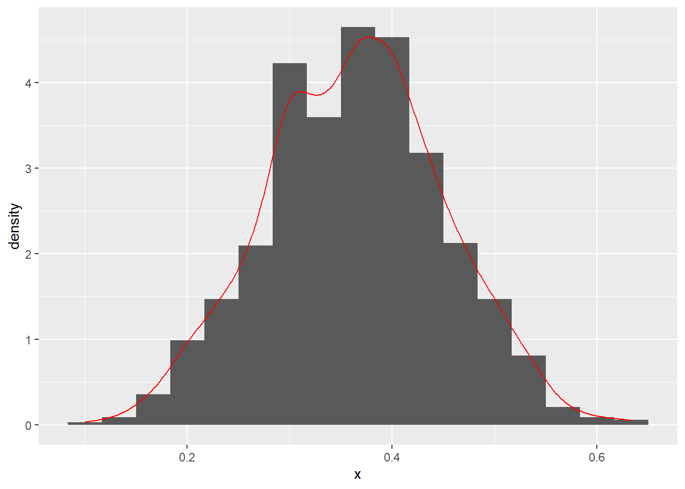
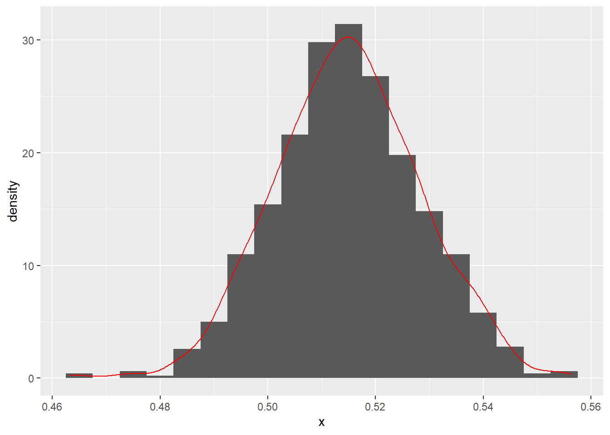

Chapter 5 Bootstrapping
5.1 Introduction
The following note is made when I was studying Bret Larget’s note posted online. http://pages.stat.wisc.edu/~larget/stat302/chap3.pdf
He used the data from LOck5data as an example.
## 'data.frame': 500 obs. of 5 variables:
## $ City : Factor w/ 1 level "Atlanta": 1 1 1 1 1 1 1 1 1 1 ...
## $ Age : int 19 55 48 45 48 43 48 41 47 39 ...
## $ Distance: int 10 45 12 4 15 33 15 4 25 1 ...
## $ Time : int 15 60 45 10 30 60 45 10 25 15 ...
## $ Sex : Factor w/ 2 levels "F","M": 2 2 2 1 1 2 2 1 2 1 ...## [1] 29.11Now, he sampled a (b X n) table. Note that, the Atlanta data has 500 row, as it has 500 observations (or, people). But, in the following new matrix, it is a (1000 times 500) table. Also, it should be noted that the logic of sample function in R. This webpage provides some insight into this function. Basically, the following R code randomly sample a bigger sample of (1000 times 500) from those 500 data points. After that, the matrix function put such (1000 times 500) data points into a matrix of (1000 times 500).
B = 1000
n = nrow(CommuteAtlanta)
boot.samples = matrix(sample(CommuteAtlanta$Time, size = B * n, replace = TRUE),
B, n)Next, we need to calculate the mean for each row. Remember, we have 1000 rows. Note that, 1 in the apply function indicates that we calculate means on each row, whereas 2 indicates to each column.
We can then plot all the means.
## Loading required package: ggplot2## Warning: package 'ggplot2' was built under R version 3.6.3ggplot(data.frame(meanTime = boot.statistics),aes(x=meanTime)) +
geom_histogram(binwidth=0.25,aes(y=..density..)) +
geom_density(color="red")
## [1] 0.9177571## [1] 1.9## [1] 27.2 31.05.2 Normal distribution, SD, SE
Note, if we do not use bootstraping, we can use the standard CI formula (https://www.mathsisfun.com/data/confidence-interval.html). This formula assumes normal distribution. As we can see, this is close to the result based on the bootstrapping method.
\[\overline{X} \pm Z \frac{S}{\sqrt{n}}=29.11 \pm 1.96 \frac{20.72}{\sqrt{500}}=27.29, 30.93\]
Note that, in the following, the author used 2 times SE to calculate the CI. The relationship between SD and SE:
“Now the sample mean will vary from sample to sample; the way this variation occurs is described by the “sampling distribution” of the mean. We can estimate how much sample means will vary from the standard deviation of this sampling distribution, which we call the standard error (SE) of the estimate of the mean. As the standard error is a type of standard deviation, confusion is understandable. Another way of considering the standard error is as a measure of the precision of the sample mean." (https://www.ncbi.nlm.nih.gov/pmc/articles/PMC1255808/)
boot.mean = function(x,B,binwidth=NULL)
{
n = length(x)
boot.samples = matrix( sample(x,size=n*B,replace=TRUE), B, n)
boot.statistics = apply(boot.samples,1,mean)
se = sd(boot.statistics)
require(ggplot2)
if ( is.null(binwidth) )
binwidth = diff(range(boot.statistics))/30
p = ggplot(data.frame(x=boot.statistics),aes(x=x)) +
geom_histogram(aes(y=..density..),binwidth=binwidth) + geom_density(color="red")
plot(p)
interval = mean(x) + c(-1,1)*2*se
print( interval )
return( list(boot.statistics = boot.statistics, interval=interval, se=se, plot=p) )
}
## [1] 16.90747 19.404535.3 Sample function
To understand the function of sample in R.
## [1] 14 20 15 17 17 3 3 5 11 6 13 8 15 11 14 18 4 9 5 13The following uses loop to do the resampling. It uses sample function to index the numbers that they want to sample from the original sample. That is, [] suggests the indexing.
n = length(CommuteAtlanta$Distance)
B = 1000
result = rep(NA, B)
for (i in 1:B)
{
boot.sample = sample(n, replace = TRUE)
result[i] = mean(CommuteAtlanta$Distance[boot.sample])
}
with(CommuteAtlanta, mean(Distance) + c(-1, 1) * 2 * sd(result))## [1] 16.90019 19.411815.4 Proportion
So far, we have dealed with means. How about porpotions?Remember that, when calculating means, it starts with a single column of data to calculate the mean. Similarly, when calculating porpotions, you can just use a single column of data.

## [1] 0.1934925 0.5398408However, if we have 48 students (i.e., 48 observations) and thus we have a bigger sample. However, how can we do re-sampling? Based on the note, it is kind of simple. They group them together and then resample from it. Note that, when they re-sampling, the programming do not distinguish the difference between 48 observations. But just combined them as a single column (741+699=1440), and then generate a very long column (1440 times 1000) and then reshape it into a matrix (1440 time 1000). This is the basic logic of the boot.mean function.

## [1] 0.4884387 0.54072795.5 boot package
After having a basic idea of boostrapping, we can then use the package of boot.
## Warning: package 'boot' was built under R version 3.6.3data(CommuteAtlanta)
my.mean = function(x, indices)
{
return( mean( x[indices] ) )
}
time.boot = boot(CommuteAtlanta$Time, my.mean, 10000)
boot.ci(time.boot)## Warning in boot.ci(time.boot): bootstrap variances needed for studentized
## intervals## BOOTSTRAP CONFIDENCE INTERVAL CALCULATIONS
## Based on 10000 bootstrap replicates
##
## CALL :
## boot.ci(boot.out = time.boot)
##
## Intervals :
## Level Normal Basic
## 95% (27.27, 30.95 ) (27.22, 30.90 )
##
## Level Percentile BCa
## 95% (27.32, 31.00 ) (27.42, 31.17 )
## Calculations and Intervals on Original Scale5.6 Concept of Percentile
require(Lock5Data)
data(ImmuneTea)
tea = with(ImmuneTea, InterferonGamma[Drink=="Tea"])
coffee = with(ImmuneTea, InterferonGamma[Drink=="Coffee"])
tea.mean = mean(tea)
coffee.mean = mean(coffee)
tea.n = length(tea)
coffee.n = length(coffee)
B = 500
# create empty arrays for the means of each sample
tea.boot = numeric(B)
coffee.boot = numeric(B)
# Use a for loop to take the samples
for ( i in 1:B )
{
tea.boot[i] = mean(sample(tea,size=tea.n,replace=TRUE))
coffee.boot[i] = mean(sample(coffee,size=coffee.n,replace=TRUE))
}
boot.stat = tea.boot - coffee.boot
boot.stat## [1] 29.5909091 11.6909091 10.1363636 13.0272727 33.3000000 15.2454545
## [7] 4.3090909 13.2090909 12.7545455 17.1636364 30.6272727 16.5636364
## [13] 18.7909091 15.9454545 18.8909091 22.8818182 13.0181818 19.3454545
## [19] 6.0090909 22.2181818 30.2636364 0.4090909 13.3272727 13.8727273
## [25] 19.6363636 23.3909091 18.3181818 11.5636364 17.4272727 21.2636364
## [31] 20.0363636 23.2818182 6.8272727 23.4909091 19.3636364 22.7818182
## [37] 17.3000000 8.3545455 29.4181818 7.0363636 26.6454545 2.6272727
## [43] 11.3636364 21.4363636 23.0818182 10.3272727 17.1727273 15.2090909
## [49] 15.6272727 30.3727273 21.3090909 4.9909091 28.5545455 10.5454545
## [55] 16.8818182 6.1363636 18.6545455 18.9090909 3.4818182 21.7818182
## [61] 28.8454545 24.5272727 22.1363636 16.6909091 2.1727273 14.8272727
## [67] 28.2000000 18.4545455 10.8272727 5.2181818 26.6545455 19.5727273
## [73] 2.0090909 24.5454545 33.9363636 23.7000000 19.7090909 26.5454545
## [79] 16.6636364 27.5909091 28.5363636 26.3090909 16.2454545 -0.5272727
## [85] 19.4272727 29.3727273 13.8454545 37.1272727 16.3090909 18.2000000
## [91] 22.3090909 29.2181818 7.2090909 12.2909091 12.4272727 26.9363636
## [97] 14.0000000 5.8727273 18.4545455 25.0454545 14.2000000 10.5000000
## [103] 20.5818182 3.4000000 10.0272727 10.0000000 16.0181818 13.4181818
## [109] 10.6818182 23.2272727 10.3636364 12.0545455 19.5000000 21.1727273
## [115] 20.7181818 26.2272727 31.8363636 37.0454545 25.4909091 9.2272727
## [121] 20.7000000 23.8636364 26.2454545 11.9090909 33.8818182 17.6909091
## [127] 16.1000000 20.2909091 9.1272727 32.6909091 28.7090909 14.2545455
## [133] 13.1363636 26.8727273 25.9090909 17.0818182 18.5000000 27.2181818
## [139] 23.2181818 17.3272727 14.5090909 16.3727273 20.3272727 8.3909091
## [145] 28.7727273 27.4000000 12.0818182 23.7000000 14.5636364 22.0545455
## [151] 7.6363636 20.2000000 24.1545455 27.8272727 25.0181818 15.9636364
## [157] 17.9181818 21.0545455 1.0636364 21.6000000 3.6909091 16.8545455
## [163] 8.9363636 6.4454545 7.4909091 10.8272727 19.1272727 7.4272727
## [169] 11.5181818 21.7363636 4.4181818 10.2090909 22.6454545 7.7636364
## [175] 9.8272727 13.2090909 30.2090909 26.6363636 31.8363636 16.7909091
## [181] 12.8363636 7.7181818 -3.4454545 9.3454545 20.1090909 28.7363636
## [187] 17.1909091 17.5545455 21.1545455 14.3000000 23.2727273 13.7818182
## [193] 6.2363636 14.6636364 17.9909091 15.2363636 19.1090909 19.7818182
## [199] 27.6727273 9.1272727 9.7363636 14.0000000 25.9545455 20.9727273
## [205] 13.4727273 10.7818182 13.3909091 8.8909091 14.4545455 14.3636364
## [211] 15.9181818 17.1090909 13.4272727 7.8727273 -4.8636364 21.7181818
## [217] 5.2272727 14.1545455 17.5363636 5.2000000 1.4272727 15.3545455
## [223] 18.2090909 18.4181818 15.8000000 16.2727273 28.7000000 14.4363636
## [229] 31.7363636 18.0272727 11.9909091 14.4272727 11.9636364 36.4727273
## [235] 3.6272727 21.8909091 -3.5090909 27.5818182 23.7909091 2.1090909
## [241] 28.8818182 21.4636364 15.1454545 18.1818182 12.8454545 8.4454545
## [247] 9.8545455 25.0727273 8.7181818 15.2909091 20.1727273 2.9545455
## [253] 2.1727273 18.4000000 18.2909091 -6.1636364 19.5909091 22.6636364
## [259] 12.8636364 18.4818182 13.3363636 31.4181818 26.6454545 18.1363636
## [265] 18.6000000 10.0363636 14.2272727 19.4181818 21.5545455 14.4454545
## [271] 21.8909091 14.3727273 8.7272727 2.9272727 13.6545455 22.4818182
## [277] 9.2363636 41.7727273 29.5181818 11.8454545 9.9545455 19.6727273
## [283] 28.7000000 23.2636364 10.9272727 28.4727273 10.2181818 21.2727273
## [289] 25.7909091 17.7909091 16.9272727 28.1727273 30.8454545 21.0909091
## [295] 17.5818182 14.5909091 10.8545455 18.0181818 15.5272727 6.7272727
## [301] 9.2545455 11.7818182 20.8545455 29.1363636 20.2636364 16.5818182
## [307] 25.6272727 9.3818182 15.4454545 13.4454545 26.6454545 19.1727273
## [313] 25.7000000 21.9727273 13.4000000 19.2272727 3.0090909 20.9363636
## [319] 11.8818182 21.6272727 12.2363636 20.0090909 26.6454545 20.5454545
## [325] 7.7181818 23.8363636 7.4363636 18.2545455 9.4545455 -0.2545455
## [331] 9.7181818 20.6636364 18.6272727 4.7181818 18.8000000 14.1727273
## [337] 10.9454545 5.7181818 15.8545455 22.3909091 16.2181818 13.1818182
## [343] 10.8090909 -2.0272727 11.2727273 18.5909091 16.6363636 26.5545455
## [349] 12.6818182 29.7272727 23.0181818 32.6818182 12.7545455 8.1909091
## [355] 3.3636364 31.6545455 17.5000000 5.2636364 2.4000000 23.6909091
## [361] 12.9272727 11.1454545 18.9909091 21.3636364 7.5272727 12.5272727
## [367] 18.6909091 15.6909091 13.6272727 32.2090909 4.9181818 19.1090909
## [373] 4.0090909 14.6363636 18.9181818 19.2454545 7.7636364 19.1363636
## [379] 10.5545455 13.5727273 15.6000000 18.5636364 26.7090909 -0.2727273
## [385] 19.3363636 1.9090909 28.3272727 14.9181818 29.5181818 13.7636364
## [391] 6.6363636 24.0909091 8.1272727 16.8181818 33.0181818 18.6000000
## [397] 7.2727273 6.6545455 15.3727273 29.8818182 31.5181818 18.0909091
## [403] 17.7272727 24.3909091 9.6636364 18.2454545 19.2000000 12.7727273
## [409] 19.5000000 28.2454545 14.7363636 10.4636364 -0.1000000 17.0000000
## [415] 20.2272727 17.1454545 14.5181818 8.2909091 21.8454545 24.9363636
## [421] 30.2545455 27.6000000 16.8545455 16.4272727 20.6090909 -2.1636364
## [427] 13.1818182 21.0272727 14.4090909 6.6454545 22.4454545 33.9090909
## [433] 15.1000000 12.9000000 25.0545455 18.7818182 21.8909091 16.0909091
## [439] 27.9636364 13.2454545 20.6727273 3.2545455 23.2272727 7.7818182
## [445] 22.9909091 10.0727273 22.2818182 11.9181818 12.8545455 16.7545455
## [451] 18.3636364 3.1818182 11.4181818 18.7909091 22.2000000 20.0454545
## [457] 15.6727273 6.9545455 16.4727273 31.3545455 24.1000000 17.8000000
## [463] 21.4454545 12.0272727 15.4181818 23.4727273 27.0272727 16.8000000
## [469] 15.9636364 32.3727273 16.4454545 9.4272727 15.3454545 9.0545455
## [475] 15.8181818 23.9000000 10.5181818 21.1909091 23.1090909 24.7181818
## [481] 21.5454545 8.8727273 24.4000000 26.9545455 10.6727273 12.8636364
## [487] 31.2454545 10.1909091 19.0090909 25.2090909 5.1181818 23.3000000
## [493] 6.8181818 19.3909091 20.9090909 16.6454545 10.0454545 18.9363636
## [499] 20.8000000 19.5090909# Find endpoints for 90%, 95%, and 99% bootstrap confidence intervals using percentiles.
# 90%: 5% 95%
quantile(boot.stat,c(0.05,0.95))## 5% 95%
## 3.358182 30.255000## 2.5% 97.5%
## 1.656136 32.032045## 0.5% 99.5%
## -3.477591 36.761955